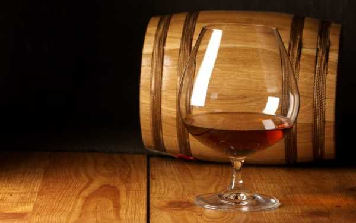
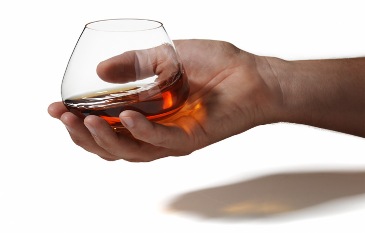

Коньяк. Оценка качества коньяка по пятибальной системе.


Настоящие мужчины — джентльмены от кончика сигареты до носков начищенных до блеска туфель — с темпераментом чистокровных кавказцев и красноречием галантных французов — пьют коньяк. Тоже, естественно, настоящий. Подделок они не признают и разбираются во всем, без исключения, начиная с уже упомянутого коньяка и заканчивая представительницами прекрасного пола.
Кстати сказать, именно с последними настоящие мужчины традиционно распивают бутылку фирменного коньяка. Причем, если французы предпочитают потчевать свою даму коньяком марками отечественного производства, то представители кавказских национальностей предпочитают произносить витиеватые тосты за любовь под рюмку, наполненную если не прославленным «Араратом», то более или менее похожим на него «Наполеоном».
Но, как бы то ни было, коньяк, о сортах и качестве которого пойдет речь в данной главе, с самого момента своего возникновения и до наших дней ассоциируется прежде всего с галантными кавалерами, способными засыпать свою возлюбленную розами и подарить райское наслаждение, пикантными анекдотами и… шоколадными конфетами, по традиции подаваемыми к этому изысканному напитку.
За коньяком издавна закрепилась репутация одного из самых элитных и дорогостоящих крепкоалкогольных напитков. Это не случайно, поскольку он обладает прекрасными вкусовыми качествами и сложным ароматом, несмотря на достаточно высокое содержание алкоголя, что является редким исключением в ряде крепких горячительных напитков.
Но следует отметить, что коньяк коньяку рознь. И об этом нужно знать каждому потенциальному потребителю этого именитого напитка. Ведь в нашей стране случается так, что стоимость товара не всегда соответствует его качеству. Высокое качество коньяка зависит прежде всего от особенностей его изготовления и от срока выдержки.
В последнее время на прилавках многих магазинов появился коньяк под названием «Наполеон». Те, кто хоть раз имел возможность попробовать этот напиток, наверняка согласится со нами в том, что кроме громкого названия и более или менее красивой этикетки с изображением греческого профиля прославленного полководца и великого императора, этот коньяк мало чем отличается от напитков подобного рода, только изготовленных в домашних условиях.
Производители «Наполеона» наверняка знали об этом, и потому не указали на этикетке более или менее точного «адреса» производства этого замечательного во всех отношениях напитка. Однако можно предположить, что место изготовления этого «коньяка» находится в пределах нашей страны и скрывается по более чем понятным причинам.
«Однако — скажете вы, — никто не заставляет вас пить этот коньяк!» (к слову сказать, очень даже недорогой). Правильно. Тем более что с недавнего времени в наших магазинах появились настоящие сорта этого напитка, по достоинству называемого «одним из лучших среди самых крепких» многими политическими деятелями, в частности самим Черчиллем.
Настоящий коньяк объединяет три таких понятия, как качество, выдержка и аромат. При отсутствии хотя бы одного из них вы можете без всякого сомнения отнести купленную вами бутылку коньяка обратно в магазин. Так как перед вами явная подделка.
Изготовление коньяка — довольно сложный и длительный процесс. Первичным (исходным) «материалом» для которого являются молодые сухие вина, преимущественно белые. Путем двойной перегонки из них получают виноградный спирт крепостью около 60-70о.
Первоначально виноградный спирт не имеет каких-либо отличительных цветовых и ароматических особенностей, которыми славится коньяк. Для приобретения этих необходимых качеств спирт помещают в специальные дубовые бочки и выдерживают его в течение нескольких лет.
Виноградный спирт имеет уникальную способность извлекать из дубовой клепки дубильные и ароматические вещества. Кроме того, за время хранения непосредственно в самом спирте происходят некоторые химические изменения. Все это кардинальным образом влияет на чудодейственный процесс превращения обычного виноградного спирта в ароматный напиток насыщенного янтарно-золотистого цвета.
Таким образом, спустя несколько лет из дубовых бочек извлекают на свет уже не виноградный, а самый настоящий коньячный спирт крепостью 69-72о. Следующим этапом нелегкого пути изготовления коньяка является добавление в полученный спирт дистиллированной воды. Вот здесь и начинаются те самые нюансы в приготовлении, от которых в результате и зависит разнообразие видов и качество коньяка.
Итак, разбавив коньячный спирт водой в зависимости от будущей марки напитка, в него добавляют немного сахара и снова помещают в дубовые бочки. На этом этапе изготовления коньяк выдерживают от 3 месяцев до 25 лет — почувствуйте разницу! За это время напиток окончательно приобретает свои вкусовые особенности и чудесный аромат. После этого готовый коньяк разливают из дубовых бочек в бутылки и отправляют на реализацию.
Разумеется, качество коньяка во многом зависит от того, сколько лет он был выдержан. Как правильно выбрать хороший коньяк из тех, которые так усердно нахваливает продавец? Определить возраст напитка проще простого — достаточно лишь сосчитать все звездочки на этикетке.
Количество звездочек соответствует годам выдержки коньяка, поэтому наличие их на этикетке в количестве пяти свидетельствует о том, что вы не зря потратите свои деньги, купив эту бутылку. Но будьте внимательны, поскольку всего может быть от трех до пяти звездочек (такой коньяк называется ОРДИНАРНЫМ). Если вы насчитали больше, значит, вам попалась удивительно некомпетентная подделка.
Но как быть в том случае, если звездочки вовсе отсутствуют? Значит ли это, что напиток никуда не годится, что он не выдерживался и года? Безусловно, нет. Скорее наоборот, так как на этикетках первоклассных МАРОЧНЫХ коньяков вместо звездочек ставят совершенно другие обозначения.
Особо ценятся следующие марки:
КВ — коньяк выдержанный. Это наиболее распространенный коньяк высокого качества. Его крепость составляет 42о, а срок выдержки такой коньяк имеет от 6 до 7 лет.
КВВК — коньяк выдержанный, высшего качества. Эта разновидность коньяка, пожалуй, наиболее крепкая, поскольку содержит самое высокое количество алкоголя — 45о. Такой коньяк выдерживают от 8 до 10 лет.
КС — коньяк старый. Его возраст не менее 10 лет. Поэтому имено этот коньяк так высоко ценится знатоками.
ОС — очень старый коньяк. Самая редчайшая марка, и потому наиболее дорогостоящая. Срок его выдержки перевалил далеко за первый десяток лет. Если такой коньяк попался вам в руки, не упускайте уникальную возможность попробовать и оценить гамму его вкусов и ароматов во всей ее полноте.
Выбирая коньяк в магазине, обращайте внимание не только на марку, но и на то, в какой стране данный коньяк был изготовлен. Коньяки самого высокого качества производят в странах ближнего зарубежья — в Армении, Грузии, Молдавии, Азербайджане. Очень высоко ценится также и коньяк, изготовленный на Украине и на Северном Кавказе.
В таких странах, как Италия, Испания, Греция и многих других, этот напиток называют бренди. В перечисленных странах технология его изготовления наиболее качественна, и сам напиток считается первоклассным. Поэтому, выбирая импортный коньяк, отдавайте предпочтение греческому, итальянскому или испанскому.
Отдельно стоит отметить такой напиток, как арманьяк, который любителями и ценителями крепких алкогольных напитков называется старшим братом коньяка. Отличается один напиток от другого тем, что если коньяк требует двойной перегонки виноградного спирта, то при производстве арманьяка можно ограничиться одной. При этом качество арманьяка отнюдь не проигрывает, хотя некоторые «злопыхатели» никогда не упускают возможность запустить камешек в огород производителей арманьяка, отметив его явное сходство с виски.
Среди сортов арманьяка, ведущим производителем которого является фирма Chateau de Laubade, наиболее известны следующие: VSOP — напиток крепостью более 60 градусов, отличающийся красивым янтарным цветом и приятным фруктовым ароматом; Hors d`Age — арманьяк крепостью 72 градуса, состоящий из спиртов, выдержанных не менее 10 лет. Этот напиток имеет темный цвет и приятный аромат: смесь еле уловимого запаха дерева с оттенками ванили и чернослива; XO — арманьяк, который выдерживается в специальных дубовых бочках не менее 15 лет, отличается особой мягкостью вкуса, благодаря которой пользуется необыкновенной популярностью у представительниц прекрасного пола, особенно у француженок, предпочитающих этот сорт арманьяка изысканным винам и сладким ликерам. Пряный аромат арманьяка XO сочетает в себе запахи сухофруктов, фиалки и ванили.
Другой известный производитель арманьяков — торговый дом «Маркиз де Кассад» — славится напитками великолепной выдержки: от 10 до 100 лет. Возраст арманьяка определяется по самому «молодому» компоненту. В Caussade 10 years — это 10 лет, а в 100 years old — соответственно, целый век. Ровно столько настоящий, лучший арманьяк томится в дубовых бочках, приобретая свои неповторимые качества.
10 и 17-летние арманьяки разливаются в особые бутылки, украшенные голубой бабочкой. Для арманьяков возраста 21–30 лет производятся специальные графины, каждый из которых сам по себе является уникальнейшим произведением искусства. А вот как выглядит арманьяк столетней давности, мы вам не подскажем. Заметим лишь то, что для особо любознательных подобный секрет будет стоить ровно 2500 долларов США. Именно во столько на одном из аукционов была оценена бутылка арманьяка фирмы «Маркиз де Кассад», выдержанная ровно 100 лет.
Что касается наиболее известных в мире марок такого напитка, как французский арманьяк, то к ним относятся: Chabot (шабо), Cles des Ducs (Кле де Дюк), Marquis de Mjntesquiou (Марки де Монтескью), Janneau (Жанно), Samalens (Самаланс), Gerland (Жерлан), Lafontan (Лафонтен), Saint-Vivien (Сэн Вивья), Marquis de Caussade (Марки де Кассад), Larressingle (Ларессэнгл).
А для тех, кто несмотря ни на что (в частности, на довольно высокие цены и сравнительный дефицит подобного напитка в нашей стране) собрался приобрести настоящий арманьяк, чтобы на собственном опыте почувствовать его уникальный аромат и насладиться изысканным вкусом, который в сочетании с высокой крепостью способен творить настоящие «чудеса» даже с бывалыми дегустаторами, приводим такую информацию, которая наверняка окажется полезной при приобретении этого напитка. Хороший арманьяк должен быть прозрачным. После взбалтывания на внутренних стенках бокала появляются характерные, ясно различимые «слезки».
Цвет арманьяка варьируется от янтарно-золотистого до оттенков красного дерева и даже темно-рубинового. Зеленоватые оттенки недопустимы.
При дегустации после первого чуть обжигающего воздействия раскрывается густой, обволакивающий букет, пленяющий своей степенностью и сбалансированностью. Арманьяк с чрезмерным содержанием танинов передает человеку излишнюю агрессивность.
Так что советуем быть осторожным и умеренным в употреблении как арманьяка, так и его «младшего брата» — коньяка, которые лучше всего, во избежание всяких неприятных случайностей вроде погрома в баре в состоянии крайнего алкогольного опьянения, потреблять в составе разнообразных коктейлей и других смешанных напитков.
«Нет ничего проще, чем производить коньяк, — считает Жан-Поль Камю — глава одной из самых знаменитых фирм, выпускающих этот напиток. — Для этого нужно, чтобы ваш прадед, дед и отец занимались тем же».
Высказывание этого человека, кстати сказать, одного из самых богатых и знаменитый людей Франции, как нельзя лучше относится к армянским производителям этого изысканного напитка. Как известно, история коньячного производства в Армении уходит корнями в далекое прошлое и имеет немало славных страниц.
В эпоху советской власти высшие партийные чины пили не что иное, как армянские коньяки, предпочитая их другим напиткам за тонкий аромат и вкус, прекрасно сочетающиеся с черной икрой, и крепость.
Несколько лет назад главный коньячный завод Еревана заключил договор с представителями французских фирм, согласно которому несколько миллионов франков было вложено в покупку бочек, бутылок и перегонных кубов для того, чтобы возродить былую славу «Арарата», «Наири» и «Васпуракана».
Известные на весь мир ереванские коньяки стали вновь появляться на прилавках фирменных магазинов благодаря компании «Перно Рикар», владельцами которой двести лет назад был создан легендарный абсент — главное алкогольное «достижение» девятнадцатого века. Теперь благодаря стараниям этой фирмы в тираж запущено восемь марок армянских коньяков.
И ценители этого замечательного напитка, в том числе и россияне, смогут оценить вкус классических армянских коньяков, так как «Арарат», «Ани», «Отборный», «Ахтамар», «Праздничный», «Васпуракан» и «Наири». Их качество ни чем не уступает качеству знаменитых французских коньяков, что может подтвердить каждый, кто хотя бы один раз пробовал «Арарат» — напиток темпераментных донжуанов родом с Кавказа.
Как известно из исторических справок, наибольшей популярностью во все времена пользовался армянский коньяк «Двин». Однако в наше время эта марка не выпускается к глубокому сожалению ценителей настоящего армянского коньяка. И прежде всего из-за слишком высокой цены некоторых ингредиентов, которые ранее импортировались в Армению из различных стран мира, а также самого процесса производства этого коньяка, который слишком длителен и дорогостоящ.
Впрочем, если вы — яркий представитель любителей алкогольных напитков домашнего изготовления, то вы можете приготовить коньяк собственными руками. Конечно, технология изготовления этого напитка в домашних условиях намного проще, и поэтому такой коньяк значительно уступает по вкусовым качествам бутылочному.
Тем не менее можем предложить вам нехитрый способ. Сырьем в данном случае вам послужит не молодое сухое вино, а спирт или крепкий самогон. На 3 л спирта вам понадобится 1 ст. л. черного индийского чая, 1 ст. л. сахара, 2–3 лавровых листа, 3–4 гвоздички и 0,5 ч. л. корицы.
Добавьте все специи в спирт, положите туда кусок дубовой коры и выдерживайте напиток в течение 7 дней. После этого добавьте немного ванильного сахара и разливайте в бутылки или другую удобную для вас тару. Следует учесть, что даже домашний коньяк требует длительного выдерживания. Чем дольше вы храните коньяк, тем лучше он становится.